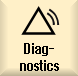
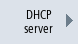

In order to more effectively influence the commissioning, press the "Network diagnostics" softkey to easily represent the data and availability of each network node on the Ethernet. The results display of this scan process delivers, among other things, the following information:
This gives you the option to test whether the current topology matches the reference topology.
Procedure
|  | 1. | Select the "Diagnostics" operating area. |
| | 2. | Press the menu forward key and the "Bus TCP/IP" softkey. |
| | | |
| | 3. | Press the "TCP/IP diagnostics" softkey. The "TCP/IP Diagnostics" window opens and displays the current availability of the network connections. |
 | 4. | Press the "Network diagnostics" softkey to browse your networks. The "Network Status" window opens and displays the addresses of the HMI (X120) system network, the PN (X150) system network and the (X130) company network. The corresponding fields in the window remain empty for non-accessible networks. |
| | 5. | Press the "New display" softkey to refresh the display. |
| | | - OR - |
|  | | Press the "DHCP server" softkey to fetch information and query the status of the DHCP server. The "DHCP Server" window opens. For each active DHCP server, the status, the role (priority), the MAC address, the TCU version and the lease version are displayed in tabular form in the upper part of the window. The required IP with the associated address area appears in the lower part of the window. Any differing data is displayed in red. |
| | 6. | Press the "Address list" softkey to acquire all information about the active DHCP server. The "Address list" window is opened. The IP address, the client ID in the form of the MAC address or the CF card number, the lease version, the device number, the DNS name and additional information are displayed for each node in a tabular form. Inactive nodes are grayed out. |